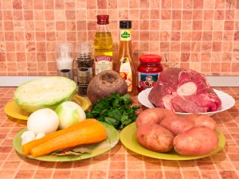

-
1 кг говядины (мякоть или на косточке)

- 500 г картофеля
- 300 г свежей капусты
- 400 г свеклы
- 200 г моркови
- 200 г лука
- 3 ст.л. томатной пасты
- 1 ч.л. уксуса 6%
- 2-3 зубчика чеснока
- 2-3 лавровых листа
Также:
- соль
- перец
- растительное масло
- зелень по вкусу
|
- Мясо залить водой, варить 1.5 часа.
- Затем мясо нарезать небольшими кусочками.
- Лук мелко нарезать.
- Морковь натереть на средней терке.
- Капусту нашинковать тонкой соломкой.
- Свеклу нарезать тонкой соломкой.
- Свеклу обжарить на растительном масле.
- Добавить уксус и томатную пасту (если паста густая, добавить немного воды), тушить 5-7 минут.
- На растительном масле обжарить лук.
- Добавить морковь, обжарить.
- Картофель нарезать кубиками или брусочками.
- В кипящий бульон добавить картофель, посолить.
- Когда бульон закипит, добавить капусту. Варить на небольшом огне 5 минут.
- Добавить свеклу, варить еще около 10 минут.
- Добавить лук и морковь.
- Следом добавить лавровый лист. Если необходимо, посолить, поперчить.
- Добавить чеснок, выдавленный через чеснокодавку.
- Убрать с огня, дать настояться 15-20 минут.
- Готовый борщ разлить по тарелкам, добавить сметану и посыпать зеленью.
|